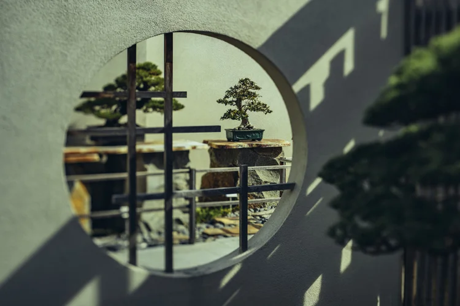

À propos
Un atelier zen et convivial.
Lisière est née d'une envie simple : transmettre le goût du bonsaï sans le rendre intimidant.
Notre histoire
Du jardin à l'atelier
Tout commence avec un genévrier offert, trop vite taillé et presque perdu. Il a fallu comprendre son rythme, se tromper, recommencer. On pourrait parler d'erreurs, mais ce sont les cicatrices qui témoignent du chemin parcouru.
Cette patience, nous avons voulu la partager. Lisière est aujourd'hui un lieu où l'on apprend, où l'on confie ses arbres et où l'on peut échanger sereinement.

Nos valeurs
Ce qui guide nos gestes
-
Patience
Un bonsaï se façonne en années, pas en week-ends. Nous prenons le temps qu'il faut, sans forcer l'arbre ni la personne.
-
Soin
Chaque arbre a son espèce, son âge, son histoire. Nous observons avant d'intervenir, et nous intervenons peu.
-
Transmission
Un geste expliqué vaut mieux qu'un geste fait à votre place. Vous repartez avec les clés pour continuer seul.
Preuve du savoir-faire
Un lieu exceptionnel pour rêver
Vous pouvez voir ici les images de l'exposition organisée par l'atelier en juillet 2026. Nous sommes fier du niveau d'excellence fréquemment atteint par nos élèves.
Une rencontre, un premier pas
Et si l'on prenait le temps d'échanger ?
Un premier bonsaï, un conseil ou l'envie d'apprendre : parlons de votre projet.
Prendre contact